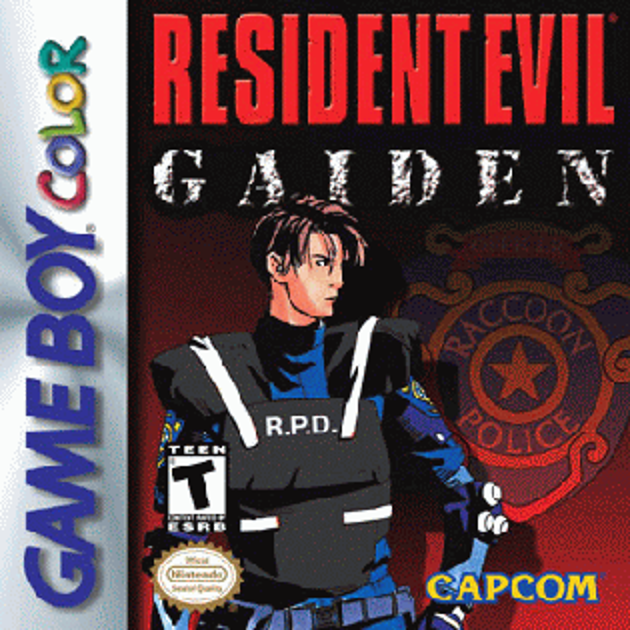
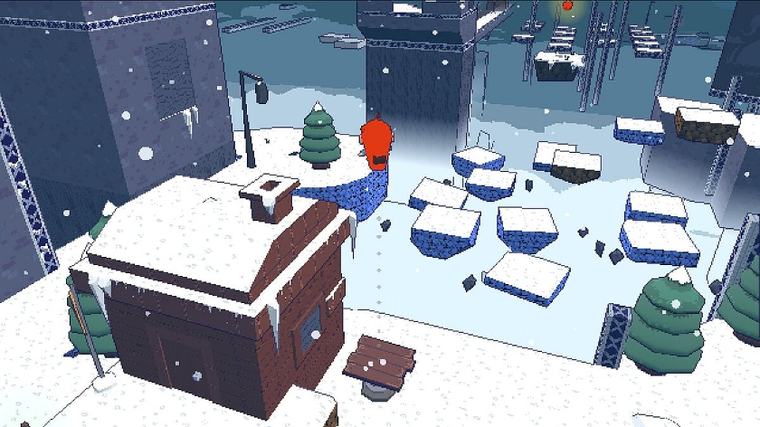
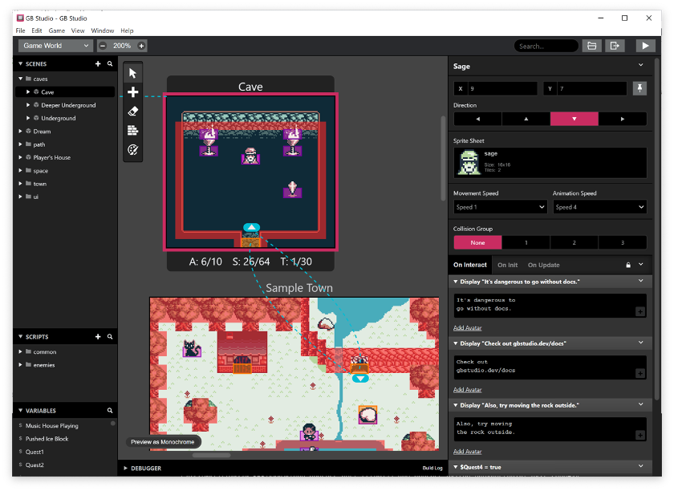
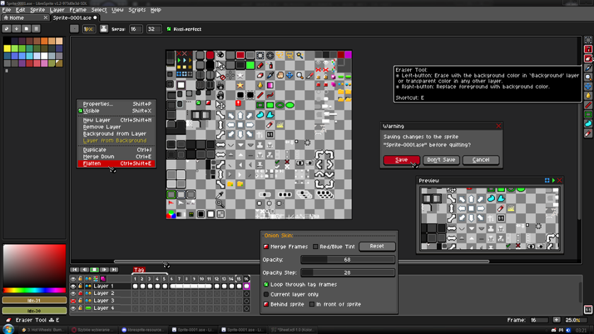
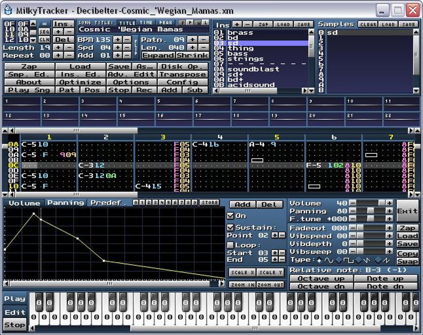

Low-Fi Futures
By Assad Bokhari
Abstract
Demaking is the practice of reimagining modern games as if they were created for older hardware. This article explores demaking as both a cultural phenomenon and a design method. It situates demakes within frameworks such as platform studies, hauntology and critiques of technological progress, showing how they illuminate the role of constraint, memory and imagination in game design. By tracing the history of demaking, outlining its main forms, and connecting it with related practices such as modding, homebrew and chiptune, the article positions demaking within a wider “replay culture.” Finally, it highlights beginner-friendly tools that make demaking accessible, even for those with no prior experience in game development. This article was developed as a result of the interactive DiSCo workshop “Lowi-Fi Futures: A Hands-On Demake Workshop,” held at Goldsmiths University on 24th September 2025.
Introduction
Demaking has emerged as a distinctive creative practice within contemporary game culture, often defined as a re-creation of a modern video game for an older platform (Ziółkowski, 2023; Chojnacki, 2017). It involves more than retro graphics or nostalgic callbacks and is an active process of reimagining what a modern game might look like if it had been designed for earlier hardware. By imposing the constraints of limited graphics, memory and input devices, demakes open up alternative possibilities for design and play. For researchers, demakes offer a useful lens for studying the relationship between technology and creativity, showing how hardware and technical limits shape style and gameplay. Demakes can act as “lost futures” that imagine games which never existed, and, ultimately, they question the common assumption that newer and updated technology always produces better design. This article examines demaking as both practice and culture. It first defines what a demake is – distinguished from remakes, remasters and ports – then explores the main forms of demakes, tracing their history, from hardware-driven simplifications in the 1980s to today’s deliberate artistic reinterpretations. The discussion then turns to the cultural and political dimensions of demaking, before concluding with practical advice for beginners who wish to experiment with accessible demaking tools.
Background: Frameworks for Understanding
Three theoretical perspectives are particularly useful for understanding demaking (Chojnacki, 2017): • Hauntology, developed by Jacques Derrida and theorised in cultural applications by Mark Fisher, describes the persistence of “lost futures” – things we imagined would come to pass but never did (Derrida, 2012; Fisher, 2013). Demakes circumflect this by creating ghostly artefacts of alternate timelines, suggesting what might have been if today’s games were released decades earlier. • Platform studies emphasises how hardware constraints shape creative outcomes (Montfort and Bogost, 2009). The demake recreates these constraints including restricted palettes, tiny resolutions, or limited sound channels which are not employed purely as nostalgic decoration but as essential design conditions. • Tech critique, especially Evgeny Morozov’s warnings about “solutionism,” reminds us that progress in graphics or processing power does not automatically equal progress in design (Morozov, 2013; Tucker, 2013). Demakes resist this assumption by deliberately choosing less, not more. These frameworks show that demaking is not only a fan practice but also a method of inquiry into how games and culture are shaped by technological limits.
Demakes and Related Practices
Demakes are sometimes described as “the opposite of remakes,” but this shorthand can obscure important differences from related practices. Rather than simply reducing fidelity or shifting platforms, demakes actively reimagine contemporary games as if they had been designed for older hardware, adopting its technical and cultural logics. To clarify the distinction (Ziółkowski, 2023; Stegner, 2021): • Remakes rebuild older games with new engines and technology. • Remasters improve audiovisual quality while preserving the underlying game. • Ports transfer a game to another platform with minimal alteration.
Forms and Examples
Demakes can be grouped into several overlapping forms (Chojnacki, 2017):
• Official demakes are commercial reinterpretations, often for handhelds. Max Payne on the Game Boy Advance replaced 3D shooting with isometric action (Möbius Entertainment, 2003).
• Unofficial demakes emerge from grassroots communities, jams, or freeware. Tools like GB Studio and PICO-8 support this culture (Maltby, 2019; Lexaloffle Games, 2015).
• Aesthetic demakes retain mechanics but change style, as in Super Smash Land (Fornace, 2011), which translates Super Smash Bros. into a Game Boy-like presentation.
• Mechanical demakes alter gameplay systems, such as Street Fighter IV: Champion Edition (Capcom, 2017) on mobile, which simplified arcade stick inputs into touchscreen combos.
• Aesthetic–mechanical demakes combine both, like Soundless Mountain II (Byrne, 2008), which reimagines Silent Hill 2 as an NES-style survival horror.

Figure 1. Screenshot of Max Payne (Game Boy Advance, 2003), developed by Möbius Entertainment and published by Rockstar Games.
Historical Overview
Foundations of Downgrade (1980–1994)
Before the term “demake” existed, hardware limitations made simplification inevitable. Nintendo’s Game & Watch (Nintendo, 1980) and Tiger Electronics LCD handhelds (Tiger Electronics, 1985) reduced arcade titles into ultra-minimal single-screen experiences. Console ports such as Pac-Man on the NES (Namco, 1984) likewise reshaped arcade play for home hardware, demonstrating how technical constraints produced alternative forms of familiar games.
Portable Constrainment (1995–2007)
The rise of handheld gaming brought scaled-down adaptations of console titles. Street Fighter II on Game Boy (Capcom, 1995), Resident Evil Gaiden on Game Boy Color (Capcom, 2001), developed after an unreleased demake of the original Resident Evil for the same platform (Aniel, 2022) and Tetris on the Nokia 3310 (Nokia, 2000) show how portability drove reinterpretation, often with significant changes in mechanics.

Figure 3. Box art for Resident Evil Gaiden (Game Boy Color, 2001), developed by Capcom.
Conceptual Demaking (2008–2022)
By the late 2000s, demaking became a conscious creative act. The TIGSource Demake Competition (Infovore » TIGSource Bootleg Demake Competition, 2008) helped popularise the term. Halo 2600 (Fries, 2010) reimagined a blockbuster for Atari hardware. Fantasy consoles like PICO-8 (Lexaloffle Games, 2015) and engines like GB Studio (Maltby, 2019) enabled hobbyists to create deliberate demakes. More recently, projects such as Bloodborne PSX (LWMedia, 2022) demonstrated both the cultural resonance and the legal vulnerability of the form.
Experimental Constraint (2023–present)
Today, demaking has become part of design research. The Playdate console (Panic, 2022), with its black-and-white screen and hand-crank, embodies intentional constraint. Some developers have also created demakes of their own work, as in Celeste Classic 2 (Maddy Makes Games, 2021) and Celeste 64 (Maddy Makes Games, 2024).

Figure 4. Screenshot from Celeste 64: Fragments of the Mountain (Maddy Makes Games, 2024), a freeware demake-style 3D platformer.
Cultural and Political Dimensions
Demakes reveal broader cultural practices as acts of cultural memory, keeping past aesthetics alive for new generations (Cerezo-Pizarro et al., 2023). They also support access and inclusion to gaming since lighter retro styles run on emulators and low-power devices (Lammes, 2007). Politically, demakes resist the logic of technological acceleration by showing value in constraint and critiquing planned obsolescence (Fisher, 2013; Xenogothic, 2020). Yet they also exist in grey zones of copyright, as seen with takedowns of fan projects like Bloodborne PSX (Eurogamer, 2025; IGN, n.d.). Demaking intersects with several related practices including: • Modding, which extends or transforms existing games, often through community-driven experimentation. While some mods are small tweaks, others grow into entirely new cultural phenomena, as with Counter-Strike evolving from a Half-Life mod into a global franchise (Unger, 2012; PC Gamer, 2024). This shows how reinterpretation can drive innovation and reshape the industry itself. • Chiptune reimagines retro consoles as instruments, with communities deeply invested in the authenticity of using original hardware. Debates around “fakebit” imitations produced on modern gear (Carlsson, 2008; Tomczak, 2014) reveal the strength of commitment to hardware-specific textures and constraints, echoing demaking’s appreciation for platform logics. • Homebrew sees hobbyists creating new titles for obsolete systems, often embedding personal, cultural, or political expression within these works (Švelch, 2013; Swalwell, 2021). Beyond nostalgia, homebrew represents a grassroots mode of digital creativity where older platforms become living canvases for new ideas. Together, these practices form a replay culture, a DIY ethos of constraint, preservation, and reinvention.
Conclusion
Demaking is more than a nostalgic pastime, it is a method of design research, cultural preservation, and critique. By embracing constraint, demakes demonstrate how technical limits actively shape style and play (Bogost & Montfort, 2009). They also perform cultural memory work, keeping older aesthetics, sounds, and platforms alive at a time when 87% of classic games are commercially unavailable (Lewin, 2023). At the same time, demakes highlight tensions in ownership and control. Fan projects such as Bloodborne PSX show how creative reinterpretations thrive in communities yet remain vulnerable to takedowns (Eurogamer, 2025). This tension underscores the importance of open-source tools, emulation, and preservation initiatives to keep game history accessible (Pinchbeck et al., 2009). Ultimately, demaking belongs not only to fans but to broader conversations about technology, creativity, and preservation. It shows that keeping older technology active is not just about remembering the past it is about securing the possibility of different futures for games.
Getting Started
All of the tools are free, open source, beginner-friendly, and run on Windows, macOS, and Linux, even if you’ve never made a video game before.
GB Studio
A free, beginner-friendly game engine for creating Game Boy-style games. No programming knowledge is required and everything is built through a visual interface.

Figure 5. Screenshot of the GB Studio interface (Maltby, 2019), a visual engine for creating Game Boy–style games. Installation & Setup
- Go to https://www.gbstudio.dev and download the installer for your system (Windows, macOS, or Linux).
- Run the installer and follow on-screen instructions.
- Launch GB Studio and start a ‘New Project’ or check out template projects to see some great examples.
Learning Resources The best place to begin is the official documentation, which clearly explains the editor, event scripting blocks, and project setup. For a more hands-on introduction, there are also excellent YouTube tutorials that walk through building a game step by step. Pixel Pete’s series is especially recommended for beginners. • GB Studio Documentation (Introduction | GB Studio, s.d.) • GB Studio Tutorial 1: Getting Started by Pixel Pete (GB Studio Tutorial 1: Getting Started, 2019)
LibreSprite
An open-source sprite editor, forked from the classic Aseprite. It’s lightweight, easy to use, and designed for creating pixel art and animations.

Figure 6. LibreSprite interface screenshot (LibreSprite, n.d.), an open-source sprite editor forked from Aseprite.
Installation & Setup
- Visit https://libresprite.github.io.
- Download the release for your operating system or use via the online editor.
- Load the GB-Studio Pallets via the Hamburger Menu -> Load palettes.
Learning Resources Since LibreSprite is a fork of Aseprite, most tutorials for Aseprite also apply directly to it. This makes it easy to follow along with existing guides and learn the basics of pixel art, layers, and animation. • Aseprite Guide for Beginners (Pixelart Tutorial) by MortMort (Aseprite Guide for Beginners (Pixelart Tutorial), 2017)
MilkyTracker
A cross-platform music tracker inspired by Amiga software from the 90s. It lets you create authentic chiptune and low-fi soundtracks using samples. While GB Studio includes beginner-friendly tools for generating simple chiptune tracks, you may prefer to use a traditional tracker like MilkyTracker.

Figure 7. Screenshot of MilkyTracker interface (MilkyTracker, n.d.), an open-source tracker inspired by Amiga software.
Installation & Setup
- Head to https://milkytracker.titandemo.org and download the version for Windows, macOS, or Linux.
- Install using the package manager (Linux) or run the installer (Windows/macOS).
- Open MilkyTracker and load ‘template.mod’ found within the GB-Studio project directory under ‘ProjectName/assets/music/.’
- Save the ‘template.mod’ as a ‘.xm’ for when editing your music and export as a ‘.mod’ when you are ready.
Learning Resources MilkyTracker can feel unusual at first if you’ve only used modern DAWs, since it follows the tracker tradition of vertical, grid-based sequencing. The official documentation covers the basics of the interface, pattern editor, and instrument management. • MilkyTracker Documentation (MilkyTracker | Documentation, s.d.) • Using MilkyTracker | GB Studio Music Tutorial by Goodnight Girl (Using MilkyTracker | GB Studio Music Tutorial, 2019)
Biography
Syed Bokhari is a senior lecturer in Games Development and Programming and University for the Creative Arts. Born in South West London, Assad began his journey in the games industry in 2012, initially working on Flash games as an audio designer and composer. His passion for interactive media and system design led him into audio implementation and, eventually, full-time engineering and game development. In 2015, he co-founded Arrogant Pixel, an independent game studio, and released The Tale of Doris and the Dragon: Episode 1, which received critical acclaim – earning a Frontpage Feature and Daily 3rd Place on Newgrounds (2015), followed by a Bronze Award from Pocket Gamer for its Steam release in 2016. His more recent work includes Nephilim Resurrection which won Best Audio Design at the GDL Indie Awards in 2024.
References
Aniel, A. (2022) Itchy, tasty: an unofficial history of Resident Evil. (Paperback edition) London: Unbound.
Beil, B. (2017) ‘Widerstandsbewegungen – Tendenzen der De-Mediatisierung des Computerspiel(en)s.’ In: Pfadenhauer, M. and Grenz, T. (eds) De-Mediatisierung: Diskontinuitäten, Non-Linearitäten und Ambivalenzen im Mediatisierungsprozess. Wiesbaden: Springer Fachmedien, pp.127–144. https://doi.org/10.1007/978-3-658-14666-5_7 (Accessed 07/09/2025).
Bogost, I. and Montfort, N. (2009) Racing the Beam: The Atari Video Computer System. Cambridge, Mass: MIT Press.
Byrne, J. (2008) Soundless Mountain II [PC freeware game]. Available at: https://superflatgames.com/ (Accessed: 06 September 2025).
Capcom (1995) Street Fighter II [Game Boy]. Osaka: Capcom.
Capcom (2001) Resident Evil Gaiden [Game Boy Color]. Osaka: Capcom. Box art image available at: https://upload.wikimedia.org/wikipedia/en/d/dd/Resident_Evil_Gaiden_Boxart.gif (Accessed: 28 September 2025).
Capcom (2017) Street Fighter IV: Champion Edition [iOS/Android]. Osaka: Capcom.
Carlsson, A. (2008) ‘Chip music: low-tech data music sharing’, in Collins, K. (ed.) From Pac-Man to Pop Music: Interactive Audio in Games and New Media. London: Routledge, pp. 153–162.
Cerezo-Pizarro, M., Revuelta-Domínguez, F.-I., Guerra-Antequera, J. and Melo-Sánchez, J. (2023) ‘The Cultural Impact of Video Games: A Systematic Review of the Literature’, Education Sciences, 13 (11), p.1116. Available at: https://www.mdpi.com/2227-7102/13/11/1116 (Accessed: 07 September 2025).
Chojnacki, M. M. (2017) ‘„Jak za dawnych dobrych lat” – demake a medium gier wideo’. In: Androsiuk, Ł. (ed.) Update. Teorie i praktyki kultury gier komputerowych. 1st edn. Lublin: Wydawnictwo Academicon, pp.13–30. Available at: https://omp.academicon.pl/wa/catalog/view/update-teorie/54/161 (Accessed 06/09/2025). Translated by the author with the assistance of AI tools (self-translation).
Derrida, J. (2012) Specters of Marx: The State of the Debt, the Work of Mourning and the New International. Hoboken: Taylor and Francis. Eurogamer (2025) ‘Bloodborne PSX demake now completely removed, Nightmare Kart continues.’ Available at: https://www.eurogamer.net/bloodborne-psx-demake-now-completely-removed-but-nightmare-kart-continues-with-dlc (Accessed: 07 September 2025).
Fisher, M. (2013) Ghosts Of My Life: Writings on Depression, Hauntology and Lost Futures. Winchester: Zer0 Books.
Fornace, D. (2011) Super Smash Land [PC freeware game]. Available at: https://www.supersmashland.com (Accessed: 06 September 2025).
Fries, E. (2010) Halo 2600 [Atari 2600]. Self-published.
IGN (n.d.) ‘As the Bloodborne PSX Demake Becomes the Latest Fan-Project to Suffer a Copyright Claim.’ Available at: https://www.ign.com/articles/as-the-bloodborne-psx-demake-becomes-the-latest-fan-project-to-suffer-a-copyright-claim-the-creator-of-bloodbornes-60fps-mod-has-offered-his-copium-official-remake-theory (Accessed: 07 September 2025).
Infovore (2008) ‘TIGSource Bootleg Demake Competition.’ Available at: https://infovore.org/archives/2008/09/12/tigsource-bootleg-demake-competition/ (Accessed 07/09/2025).
Lammes, S. (2007) ‘Approaching Game-Studies: Towards a Reflexive Methodology of Games as Situated Cultures.’ In: DiGRA Conference Proceedings. Available at: https://dl.digra.org/index.php/dl/article/download/342/342/339 (Accessed: 07 September 2025).
Lewin, K. (2023) ‘87% Missing: The Disappearance of Classic Video Games.’ Video Game History Foundation. Available at: https://gamehistory.org/87percent/ (Accessed 07/09/2025).
Lexaloffle Games (2015) PICO-8 Fantasy Console [Software]. Available at: https://www.lexaloffle.com/pico-8.php (Accessed: 06 September 2025).
LibreSprite (n.d.) LibreSprite [Software]. Available at: https://libresprite.github.io (Accessed: 28 September 2025). Screenshot reproduced from: https://libresprite.github.io/assets/zeroDark.png (Accessed: 28 September 2025).
LWMedia (2022) Bloodborne PSX [PC fan game]. Available at: https://b0tster.itch.io/bbpsx (Accessed: 06 September 2025).
Maddy Makes Games (2021) Celeste Classic 2: Lani’s Trek [Browser game]. Available at: https://www.lexaloffle.com/bbs/?tid=41282 (Accessed: 06 September 2025).
Maddy Makes Games (2024) Celeste 64: Fragments of the Mountain [PC freeware game]. Available at: https://maddymakesgamesinc.itch.io/celeste64 (Accessed: 28 September 2025). Screenshot reproduced from: https://static.wikitide.net/celestewiki/thumb/0/0d/Celeste64.jpg/1200px-Celeste64.jpg (Accessed: 28 September 2025).
Maltby, C. (2019) GB Studio [Software]. Available at: https://www.gbstudio.dev/ (Accessed: 28 September 2025). Screenshot reproduced from: https://www.gbstudio.dev/img/home/screenshot_win_1_v4.png (Accessed: 28 September 2025).
MilkyTracker (n.d.) Documentation. Available at: https://milkytracker.org/documentation/ (Accessed: 28 September 2025).
Möbius Entertainment (2003) Max Payne [Game Boy Advance]. Rockstar Games. Screenshot available at: https://blogger.googleusercontent.com/img/b/R29vZ2xl/AVvXsEi_bi7YEXrSbSkGcKQD7iVVAYn20AKL4QpLzYczZytq74rXGY1xzqWKO49biIfhE1NylqrQs1_I2TouiEWayRxt8IP9rPkWMn75dyEq8ujXa6vhzYrEQx3ZsrE4V5YvWeq14XRpbxEVqFMV1AOmWv35fnQ506x2idZEMMW7_HfnE_MYmsAj2zFhO54FnDJR/s1600/Max_Payne09(GBA).png (Accessed: 28 September 2025).
Morozov, E. (2013) To Save Everything, Click Here: Technology, Solutionism, and the Urge to Fix Problems that Don’t Exist. London: Allen Lane.
Namco (1984) Pac-Man [Nintendo Entertainment System]. Tokyo: Namco.
Nintendo (1980) Game & Watch [Handheld electronic game]. Kyoto: Nintendo.
Nokia (2000) Tetris [Nokia 3310]. Espoo: Nokia.
Panic (2022) Playdate [Handheld console]. Portland, OR: Panic. PC Gamer (2024) ‘The original Counter-Strike mod is 25 years old, Valve calls it “the greatest videogame ever made”’, 20 June. Available at: https://www.pcgamer.com/games/fps/the-original-counter-strike-mod-is-25-years-old-valve-calls-it-the-greatest-videogame-ever-made/ (Accessed: 07 September 2025).
Pinchbeck, D., Anderson, D., Delve, J., Alemu, G., Ciuffreda, A. and Lange, A. (2009) ‘Emulation as a Strategy for the Preservation of Games: The KEEP Project.’ In: DiGRA 2009 Conference Proceedings. Available at: https://researchportal.port.ac.uk/en/publications/emulation-as-a-strategy-for-the-preservation-of-games-the-keep-pr (Accessed: 07 September 2025).
Stegner, B. (2021) ‘Video Game Ports, Remakes, Remasters, and Reboots Explained.’ Available at: https://www.makeuseof.com/video-game-ports-remakes-remasters-reboots/ (Accessed: 06 September 2025).
Swalwell, M. (2021) Homebrew Gaming and the Beginnings of Vernacular Digitality. Cambridge, MA: MIT Press.
Švelch, J. (2013) ‘Say it with a Computer Game: Hobby Computer Culture and the Non-entertainment Uses of Homebrew Games in the 1980s Czechoslovakia.’ Game Studies, 13 (2). Available at: https://gamestudies.org/1302/articles/svelch (Accessed: 08 September 2025).
Tomczak, S. (2014) ‘Chipmusic, Fakebit, and the Discourse of Authenticity in the Chipscene.’ Organised Sound, 19 (1), pp. 68–77. Available at: https://www.researchgate.net/publication/262639211_Chipmusic_Fakebit_and_the_Discourse_of_Authenticity_in_the_Chipscene (Accessed: 08 September 2025).
Tucker, I. (2013) ‘Evgeny Morozov: “We are abandoning all the checks and balances”.’ The Guardian, 09 March. Available at: https://www.theguardian.com/technology/2013/mar/09/evgeny-morozov-technology-solutionism-interview (Accessed: 07 September 2025).
Unger, A. (2012) ‘Modding as Part of Game Culture.’ In: Fromme, J. and Unger, A. (eds) Computer Games and New Media Cultures: A Handbook of Digital Games Studies. Dordrecht: Springer Netherlands, pp.509–523. https://doi.org/10.1007/978-94-007-2777-9_32 (Accessed: 07 September 2025).
Xenogothic (2020) ‘The Games Industry: Accelerationism and the Hauntological in Microcosm.’ Available at: https://xenogothic.com/2020/06/07/the-games-industry-accelerationism-and-the-hauntological-in-microcosm/ (Accessed: 07 September 2025).
Ziółkowski, J. (2023) ‘Nostalgiczna twórczość fanowska. Wyjaśnienie kategorii demake.’ Replay: The Polish Journal of Game Studies, 10 (1), pp.37–61. Translated by the author with the assistance of AI tools (self-translation).